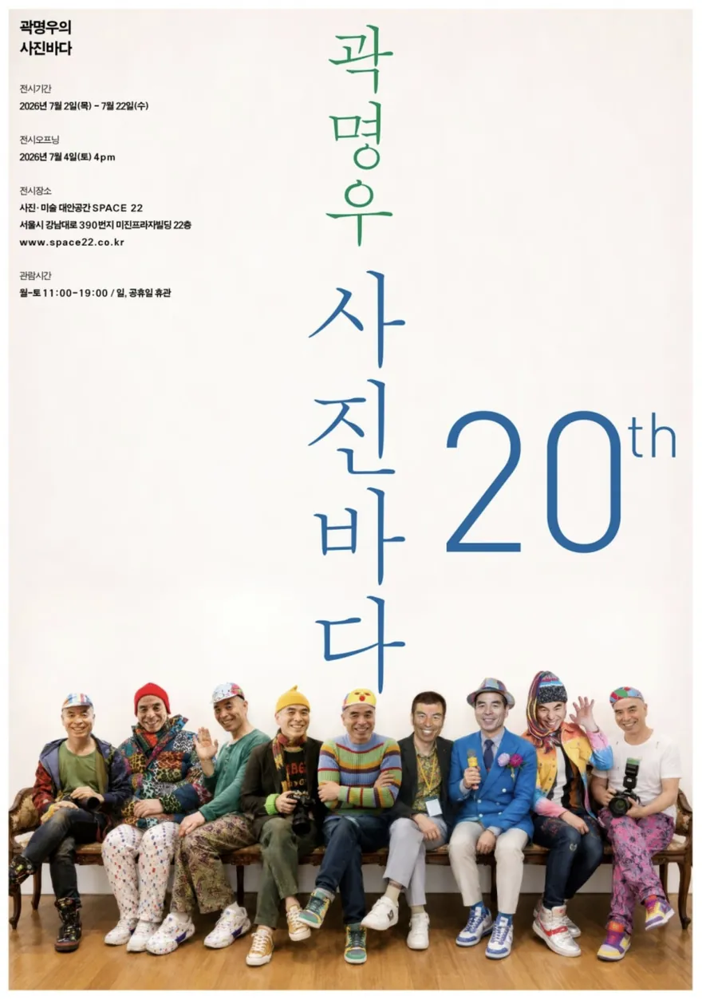
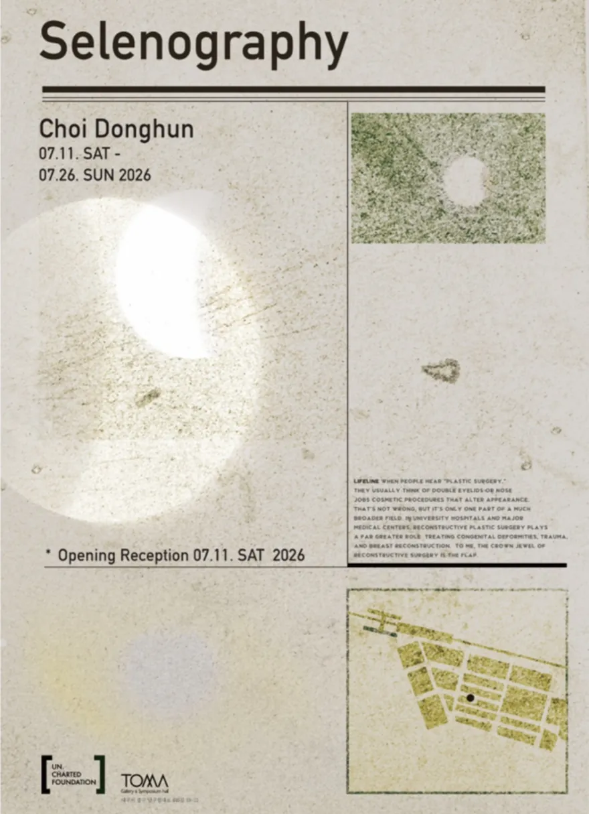
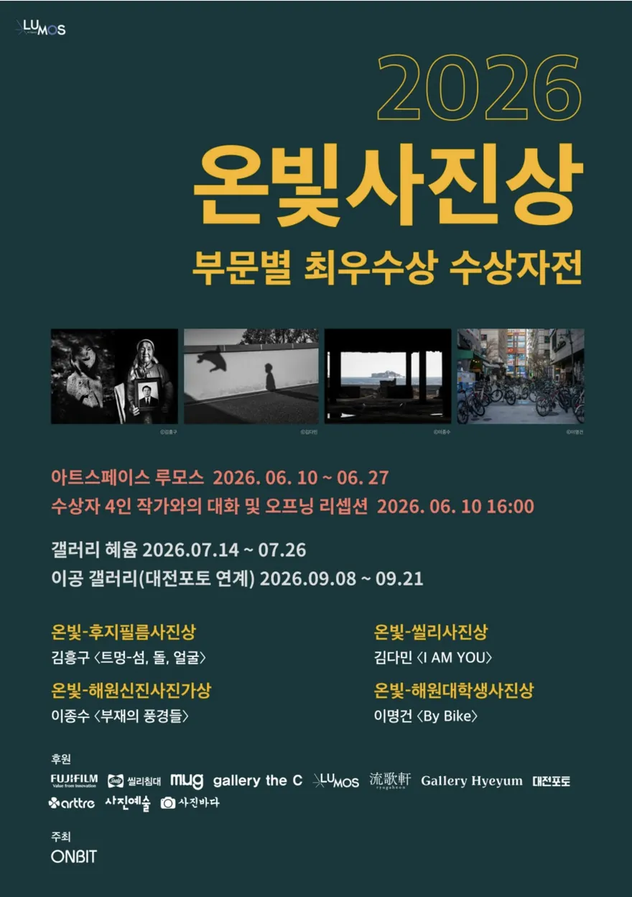
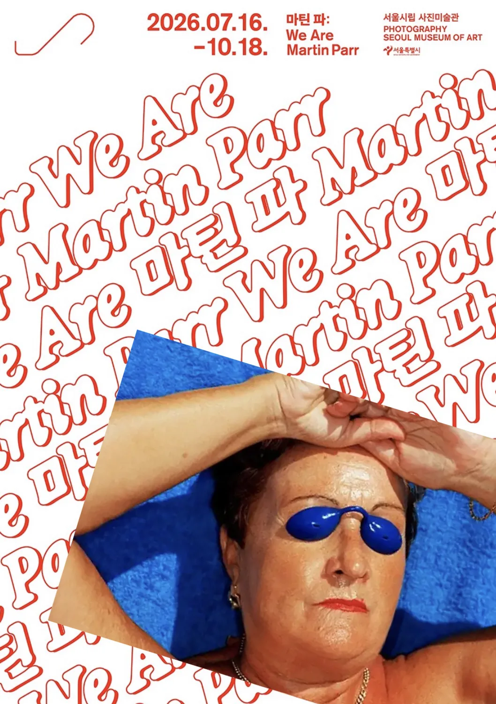
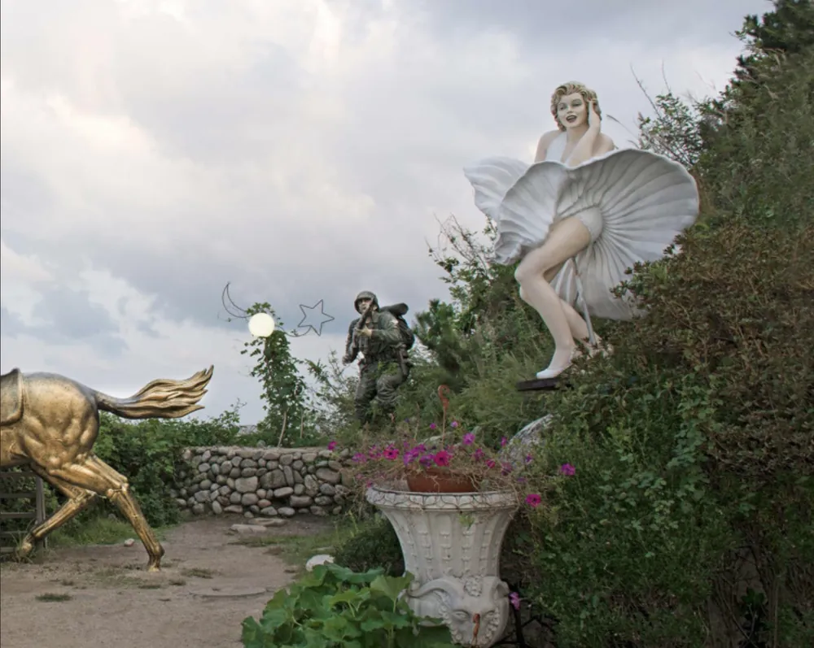

"7월에는 개인전이 유난히 많다. 스무 해를 채운 얼굴들, 달의 지형, 광주로 온 다큐멘터리 사진상. 그리고 여름을 통째로 건너가는 큰 전시들이 그 옆에 나란히 선다."
6월이 한 달짜리 단체전으로 붐볐다면, 7월은 한 사람의 시간을 오래 들여다보는 개인전과 수상자전이 앞줄에 선다. 짧게는 3주, 길게는 이듬해 봄까지 이어지는 전시가 같은 달에 겹친다. 마지막 주말 한 번이 7월을 가른다. 한 달 안에 끝나는 것부터 정리한다.
7월 안에 닫히는 세 장면

곽명우, 〈사진바다 — 스무 해의 얼굴들〉
SPACE 22 (서울시 강남대로 390 미진프라자빌딩 22층). 7.2 – 7.22. 오프닝 7.4 토 PM 4:00. 월–토 11:00 – 19:00 / 일·공휴일 휴관.
스무 해 동안 카메라 앞에 세운 얼굴들. 인물을 찾아다닌 20여 년의 기록을 한자리에 모은 개인전이다. 포스터의 벤치에 나란히 앉은 사람들이 그 시간의 얼굴들을 대신한다.

최동헌 Choi Donghun, 〈Selenography〉
갤러리 토마 (대구). 7.11 – 7.26. 오프닝 리셉션 7.11 토.
달 표면의 지형을 기록하는 학문, 월면학(selenography)에서 제목을 빌렸다. 재건성형외과 의사이기도 한 작가가 '표면'과 '지도'를 겹쳐 읽는다. 달의 크레이터와 몸의 피부, 항공사진과 조직의 결이 한 화면 안에서 지형이 된다. 언차티드 파운데이션(Un.Charted Foundation) 기획.

2026 온빛사진상 부문별 최우수상 수상자전
갤러리 혜윰 (광주). 7.14 – 7.26. 주최 온빛(ONBIT).
다큐멘터리 사진을 지켜 온 온빛사진상의 올해 부문별 최우수상 네 명을 모았다. 김흥구 〈트멍 — 섬, 돌, 얼굴〉(후지필름사진상), 김다민 〈I AM YOU〉(씰리사진상), 이종수 〈부재의 풍경들〉(해원신진사진가상), 이명건 〈By Bike〉(해원대학생사진상). 대구 아트스페이스 루모스(6.10 – 6.27)에서 시작해 광주 혜윰을 거쳐 대전 이공갤러리(9.8 – 9.21)로 이어지는 순회전. 이번 여름의 정거장이 광주다.
여름을 건너가는 세 장면
랄프 깁슨 Ralph Gibson, 〈French Allure〉
고은 깁슨 사진미술관 (부산시 해운대구 중동1로37번길 10). 6.17 – 2027.4.10. 화–일 10:00 – 18:00 / 월 휴관. 관람료 3,000원.
부산 해운대에 국내 첫 랄프 깁슨 상설 미술관이 문을 열며 내건 개관 기념전이다. 한불 수교 140주년에 맞춰, 그가 프랑스에서 만든 작업을 모았다. 미국 사진의 거장이 프랑스의 표면 — 벨벳, 금박, 그림자 — 을 어떻게 자기 언어로 옮겼는지. 이듬해 봄까지 열려 있으니, 여름의 부산 여행에 넣어 둘 만하다.

마틴 파 Martin Parr, 〈We Are Martin Parr〉
서울시립 사진미술관 (SeMA). 7.16 – 10.18. 무료 관람.
지난해 12월 세상을 떠난 매그넘의 사진가. 그를 보내고 처음 열리는 아시아 대규모 회고전이다. 초기 흑백부터 마지막 시기 컬러까지 약 500점, 대표 시리즈 14개, 그리고 그가 평생 함께 만든 사진집 89권이 한자리에 놓인다. 2000년대 초 남북한을 촬영한 작업도 이번에 처음 공개된다. 매그넘 포토스·마틴 파 재단 공동 기획.

김전기, 〈기억의 형상들〉
강릉시립미술관. 7.22 – 8.4.
관광지에 세워진 인공 조형물 — 마릴린 먼로상, 황금 말, 병사상 — 을 따라간다. 누군가의 기억을 흉내 내려고 만든 형상들이 실제 풍경 속에서 어긋나며 만드는, 조금 쓸쓸하고 낯선 '기억의 풍경'. 8월 첫 주까지만 열리니 7월 안에 챙겨 두는 편이 좋다.
"7월은 마지막 주말이 가장 분주하다. 22일에 곽명우의 스무 해가 닫히고, 26일에는 최동헌의 달과 온빛사진상의 광주 정거장이 같은 날 문을 닫는다. 그 사이 22일, 강릉에서 김전기가 시작한다."
정리
- 이번 주말 (7.11 – 7.12) 〈Selenography〉 오프닝 리셉션 (갤러리 토마, 대구, 7.11 토). 같은 날 온빛사진상 광주전이 개막을 앞둔다.
- 셋째 주말 (7.18 – 7.19) 온빛사진상(갤러리 혜윰, 광주) 관람 적기. 곽명우 〈사진바다〉(SPACE 22)는 7.22 마감이 코앞이다.
- 마지막 주말 (7.25 – 7.26) 가장 분주한 주말. 최동헌 〈Selenography〉와 온빛사진상 수상자전이 7.26 나란히 닫힌다. 강릉의 김전기 〈기억의 형상들〉은 7.22 시작해 이 주말이 첫 감상 기회.
- 여름을 건너 랄프 깁슨 〈French Allure〉(고은 깁슨 사진미술관, ~2027.4.10), 마틴 파 〈We Are Martin Parr〉(서울시립 사진미술관, 10.18), 김전기 〈기억의 형상들〉(강릉시립미술관, 8.4)은 8월 이후에도 기회가 남아 있다.
목록의 출처는 인스타그램 @sajinyesul_photoart 의 7월 큐레이션과 각 미술관·갤러리의 공식 채널이다. 날짜는 공식 채널 기준으로 정리했으며, 운영 시간과 휴관일은 사전 확인이 필요하다. 정보 변경이 확인되면 본 글에 보강할 예정이다.